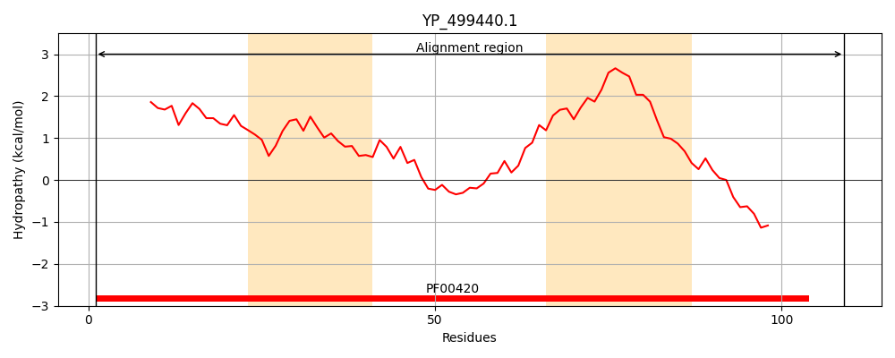
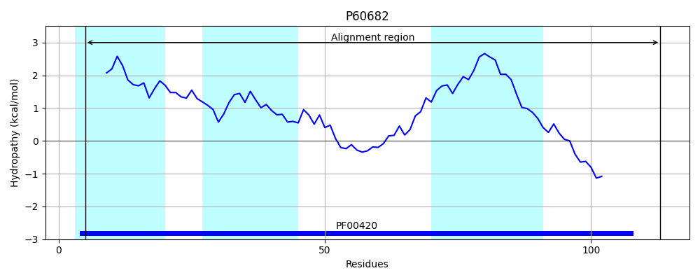
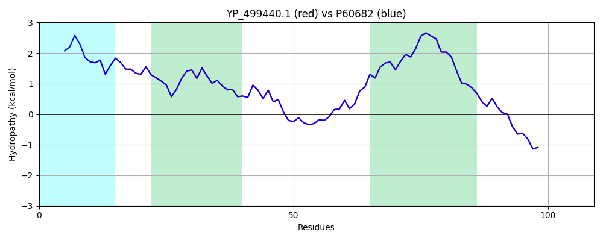

Hit Accession: P60682
Hit TCID: 2.A.63.1.3
Hit Description: gnl|BL_ORD_ID|11124 gnl|TC-DB|P60682|2.A.63.1.3 Na(+)/H(+) antiporter subunit C - Staphylococcus aureus.
Mach Len: 109
e:0.000000
Query TMS Count : 2
Hit TMS Count: 3
TMS-Overlap Score: 2.050000
Predicted Substrates:CHEBI:9175;sodium(1+), CHEBI:5584;hydron
BLAST Alignment:
| Protein Hydropathy Plots: | |
|---|---|
|  |  |
Pairwise Alignment-Hydropathy Plot: | |
|  | |